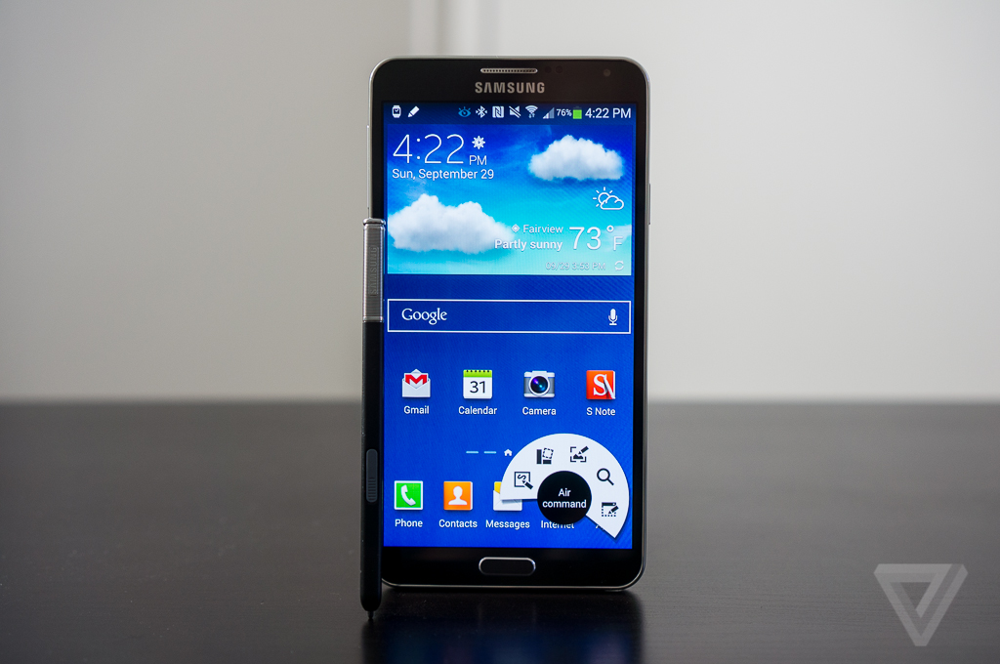
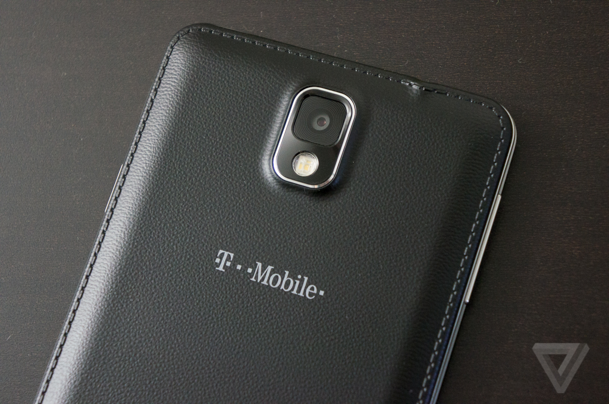
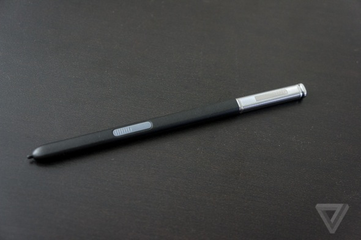
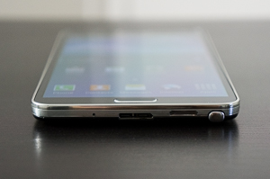
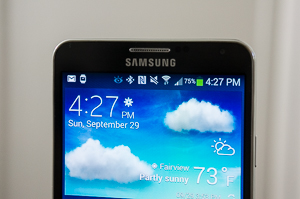

LG G2 review
LG G2 review
| Home | History Of smartphones | Reviews | Best cameraphones | Best android smartphones of 2013 |

Samsung essentially created the market for the in-between smartphone — a device that could ostensiblytake the place of both a smartphone and a tablet — with its wildly popular Galaxy Note lineup. (The Korean phone-maker recently boasted that it has sold over 38 million Galaxy Note and Galaxy Note II smartphones worldwide.) The Galaxy Note 3, available this month for $299.99 on-contract from all four major US carriers, is an evolution of Samsung’s very successful idea: it’s faster, slimmer, and nicer than last year’s Note II, but it doesn’t fundamentally upend the Galaxy Note experience.
But since the first Note’s introduction in 2011, competitors have flooded the market with phones that are bigger than ever before. None have been able to match Samsung’s breakaway success yet, though, and none have really given users a compelling reason to have such a large phone. Can Samsung’s minor tweaks make the Note 3 more than just a bigger screen, and allow the device to keep its status as king of the huge phones?
Iterations
Last year, Samsung softened corners and rounded the overall shape of the Note II compared to the original model. It made the behemoth of a phone slightly easier to handle. This year Samsung’s gone back to a rectangular shape on the Note 3, which looks much more like the first Note than last year’s edition. The Note 3 carries most of the design ethos of the Galaxy S4, including the chromed plastic border that’s supposed to look like metal but isn’t, and the single home button flanked by two capacitive keys for "menu" and "back." Around back is where Samsung has made the most significant improvement to the Note’s design — it has replaced the slimy glossy plastic that has become both the trademark and punchline for Samsung devices with a textured finish that feels almost leathery in a good way.
What’s most striking about the Note 3 is how Samsung was able to increase the size of the display — it’s grown to 5.7 inches — yet the overall footprint of the phone itself is virtually the same. In fact, the Note 3 is thinner and narrower than the Note II. As a result, the Note 3 is ever so slightly easier to handle than last year’s model, even though it has a squarer, less ergonomic shape. It’s still absurdly big, however, and it’s not a phone that you can use with one hand.
Even Faux Leather Is A Huge Upgrade From Slick Plastic

The display itself has been upgraded to a 1080p Super AMOLED panel. Full HD displays are table stakes for any high-end Android phone released in 2013, and while the Note 3’s screen doesn’t blow me away like the LG G2’s or HTC One’s, it’s bright, colorful, and viewable outdoors. Samsung also borrowed a feature from Nokia for the Note 3: you can increase the touch sensitivity of the screen in order to use it with gloves, and it works great.
Samsung has also minimized the bezels surrounding the screen, much in the way Motorola and LG have recently done, which keeps the overall size of the phone down. The Note 3’s screen doesn’t offer the same "wow I’m holding a portal to the internet in my hand" experience as the G2 — the hardware buttons below the display bring you back to reality — but it’s still a welcome improvement.
The Note 3 improves upon the Note II’s 8-megapixel camera with the 13-megapixel sensor we first saw in the Galaxy S4. The one thing it has over the S4 is the ability to shoot 4K video, but since most people don't have a screen that can actually display 4K video yet, you're probably better off sticking with 1080p for now (1080p is set as the default video recording setting). The 4K footage does look pretty great if you can view it, however. The Note 3’s shooter won’t give the iPhone 5S or Nokia Lumia 1020 a run for their money, but it’s one of the better cameras in the Android world.
The Note 3 is still plastic, and Samsung’s silly faux-stitches around the back edge won’t fool anyone, but it feels a million times better when you touch it than any recent Samsung smartphone I can think of. It’s also a lot easier to handle, just because it doesn’t feel quite as eager to slide right out of your hands. It’s not as nice as an HTC One or iPhone 5S, but it’s a step forward for Samsung’s design department. A baby step.
Same old TouchWiz
Once you’ve powered on the Note 3 and gotten past the lock screen, you’re thrown into Samsung’s very familiar TouchWiz interface. In fact, the Note 3’s interface is practically the same experience that comes on the Galaxy S4, but with a couple of additions to support the Note’s S Pen. The Note 3 does come with Android 4.3 Jelly Bean out of the box — it’s the first major Samsung product to do so — but you’d be hard-pressed to see the difference.
TouchWiz is full of color and sound effects, and while it isn’t as ridiculous as LG’s custom UI, it’s something you either love or hate. I’m in the latter camp — I prefer my Android unadulterated by manufacturers — but once I found out how to turn off all of the bleeps and bloops and extraneous sound effects, TouchWiz became usable, if not quite lovable. The Note 3 includes all of the gimmicky eye-tracking and gesture features that debuted on the Galaxy S4, which we found marginally useful on a 5-inch phone, and are still marginally useful on a 5.7-inch phone.
The S Pen Is Still What Separates The Note From The Rest Of The Pack

Multi Window, Samsung’s dual-pane multitasking feature, is present and accounted for, and it has been improved on the Note 3 to let you open new links in a split screen window, leaving your original app visible in the top of the screen. Multi Window is a pretty novel way to make better use of the Note’s massive screen real estate and it’s certainly a better multitasking feature than other manufacturers have come up with.
Aside from a larger screen, the only thing that really separates the Note 3 from the Galaxy S4 is its S Pen. For the new model, Samsung has added the Air Command feature, which gives you quick access to S Pen functions every time you pull it out. Air Command offers a discrete fan of options for the S Pen instead of the system completely rearranging your home screen every time as on the Note II. It’s easier to interact with, and more importantly, easier to ignore. You can hover over the Air Command fan to see five various actions: Action Memo, Scrap Booker, Screen Write, S Finder, and Pen Window.
The most interesting of those functions are Action Memo and Pen Window. Action Memo is designed to let you quickly jot down information — a note, a phone number, an address, a to-do item, or whatever — and then jump right into an action by tapping on what you wrote down. In practice, it works well for creating contacts and to-dos, but other than that, it really feels incomplete and isn’t contextual enough for all of the things you might want to do. I don’t understand why I can’t use it to add an appointment to my calendar, for instance ("Lunch with Sarah at noon tomorrow" just becomes a comical, three-line to-do list).
The Note 3's Handwriting Recognition
Is Surprisingly Accurate

Pen Window is almost something you have to see in person to really grasp how silly it is. You click the Pen Window function in Air Command, and then draw a rectangle whereever you like on the Note 3’s display. You can then choose from eight supported apps (calculator, clock, YouTube, phone, contacts, ChatOn, Hangouts, or Samsung’s web browser) to launch within that rectangle, giving you a windowed app experience on top of whatever you were doing previously. Windowed apps can be resized, moved around, layered, and even minimized.It was easier to just launch an app normally and use Android’s multitasking to go back to what I was doing previously than it was to work with Pen Window. It took more thought for me to launch Air Command, draw a rectangle, choose my app, resize and move it if necessary, and then get to actually using the app.

The S Pen’s handwriting recognition is quite impressive — Samsung seems to improve it with every generation of Note — and there’s a new quick-access handwriting window that you can use in any text field. The Note’s transcription was mostly accurate even with my grotesque chicken-scratch handwriting, but I found that I’m still far faster at typing on the on-screen keyboard than using the S Pen to write anything down. You can, of course, still use the S Pen to doodle and draw to your heart’s content, and many artists have proven over the years that it’s quite capable for those functions. The Note 3 comes with Pen.UP, a Pinterest-like social network for people to share their S Pen artwork, if you’re looking for artistic inspiration, and Autodesk’s Sketchbook app, which can take advantage of the different pressure sensitivities of the S Pen.
An argument is often made that Samsung’s software and enhancements make the device more "productive" or efficient to use. But when I used it, I certainly didn’t feel any more productive than with any other modern smartphone. You really have to give yourself to the TouchWiz and conform your habits to Samsung’s way of thinking to get the most out of the Note’s unique features, and that’s not necessarily the best way of doing things for many people. It certainly wasn’t for me, and in many cases, being required to use two hands to do anything on the phone made me less productive than I might have been with a smaller device.
On the Note 3, Samsung is answering the question nobody asked about HTC’s BlinkFeed with its own My Magazine feature. Powered by Flipboard, My Magazine aggregates news stories and posts from a number of sources, including social networks, and presents them in a very visual way, with tiled layout and lots of colorful pictures. It’s less in-your-face than BlinkFeed, but BlinkFeed isn’t exactly an awesome, must-have feature. Perhaps that’s why Samsung buried My Magazine under a swipe-up gesture from the home screen that most users will never notice.

All day and all night
The Note has always been one of the fastest Android phones on the market, and the Note 3 is even faster than before. The T-Mobile version I reviewed has Qualcomm’s top-of-the-line S800 processor and 3GB of RAM (different global versions swap the S800 for a Samsung Exynos chip, but all of the US models will have the Qualcomm), which gives the Note 3 speedy performance with no hiccups. I never really had to wait for the phone to do anything (apart from the Gallery app, which was uncharacteristically slow at times), and Samsung’s customizations don’t noticeably hold the phone back from being as fast as it could be. You won’t notice many of the speed increases unless you compare the Note 3 side-by-side with other devices, and raw power isn’t everything, but there’s plenty of raw power here.
Performance is rarely an issue for the Note 3
and battery life is never a concern
It never feels right holding a massive phone to your face to make a call, but when you have to, call quality on the Note 3 is excellent. The Note 3 also takes good advantage of T-Mobile’s LTE network where available, and its 802.11a/c Wi-Fi is able to max out my 125Mbps home broadband connection without breaking a sweat.

Big phones beget big batteries, and Samsung has always included an oversized cell in Note devices. The Note 3’s 3,200mAh battery is enough to keep the big guy going well into two days for most people. I was able to use the phone from sunup to sundown and then some with my usual workflow, which I suspect is more tasking than the average person’s. Power users can expect a full day of use from the Note 3, but if they need more, they can pop the back off the Note and swap in freshly charged battery — a rare option among smartphones these days.
The Note 3 lasted 8 hours and 15 minutes on our battery test, which is very good but not quite up to the LG G2. It’s a tad reassuring to not have to worry about your smartphone dying on you in the middle of the day, and it’s one of the big advantages of using such a huge smartphone. The downside is that it takes a long time to recharge the Note’s massive cell, but that’s a small concession to make for added stamina.
Wrap-up

GOOD STUFF BAD STUFF
Samsung Didn't Reinvent The Wheel Here, It Just Gave It a Smoother Ride
The big phone category is well, bigger than ever, but the Galaxy Note 3 proves that Samsung still owns this arena. The wealth of iterative improvements over last year’s quite-capable model are more than welcome, and the overall experience is better than ever. It feels nicer, runs faster, lasts a long time, and is just a better device overall than the Note II. If you really liked the earlier models, you’ll love the Note 3, but it probably won’t convert those that never bought into the idea. Samsung didn’t reinvent the wheel here, it just gave it a smoother ride.
Samsung is still the only manufacturer to give oversized smartphones a function other than “have a big screen,” and the updated S Pen and associated software will be appreciated by many. The Note 3 is not a phone for everyone — looking at it side-by-side next to my iPhone, I wonder how two beings of the same species could opt for such wildly different devices — but the runaway successes of the Note and Note II have proven that there is a demand for such a large phone.
We’ll have to see if the other manufacturers playing in this space will be able to catch up to Samsung — so far, none have offered a compelling stylus experience, which is what really differentiates the Note — but for this year, if you’re looking for the biggest smartphone you can get with the best experience, the Note 3 should be at the top of your list.